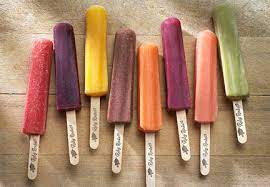

Icepop

Description
As many of you know, nothing trumps eating some ice pops and watching some minecraft.
Although you, the reader, are now past your prime and close to death, does not mean
you can't attempt to reach this feeling again. Creating these ice pops gets you one step
closer to this reality.
Ingredients
- Sugar
- Water
- Food Coloring
- Popsicle stick
Steps
- Pour water and suger into a bowl and mix well
- Add sugar water to the ice pop mold
- In each individual mold, add food coloring of choice
- Carefully place popsicle stick into each mold
- Place molds into freezer for 250 hours
- ENJOY!!!